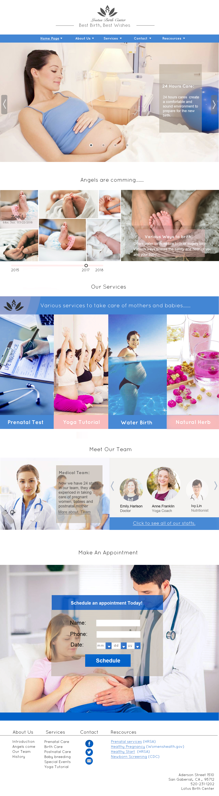

Home Page
Interactive Installation
Smart Dandelion
Green Belt
Magic Mirror
Recreational Games
SnakeGame
2048 Game
Interface & Websites
Under Construction" Portfolio
The Lotus Birth Center
U-health App UI/UX design
Seek for more
Resume
Contact Her
